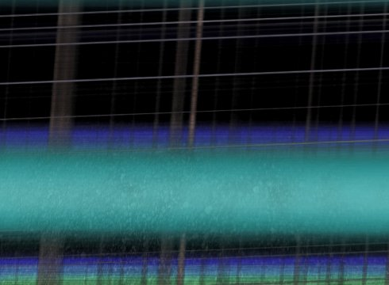

paris

Billy Roisz
|
4 min – HD – no dialogue I: Billy Roisz – M: MoE – V: Sixpackfilm Website Billy Roisz
|
Tuesday 16 oct 8.30 pm werkstattkino
Music video for the Norwegian rock trio MoE, whose raw style is between metal and noise. Roisz translates each instrument and Moe´s voice into its own visual level, and the end results are then layered visually.
Billy Roisz born in 1967. Lives and works in Vienna/Austria.Billy Roisz is one of the best-known figures on the Austrian experimental scene.
|
| Films blinq 2002 – zounk! 2012 – darkroom 2014 – THE 2015 – Toutes directions 2017 – paris 2017
|